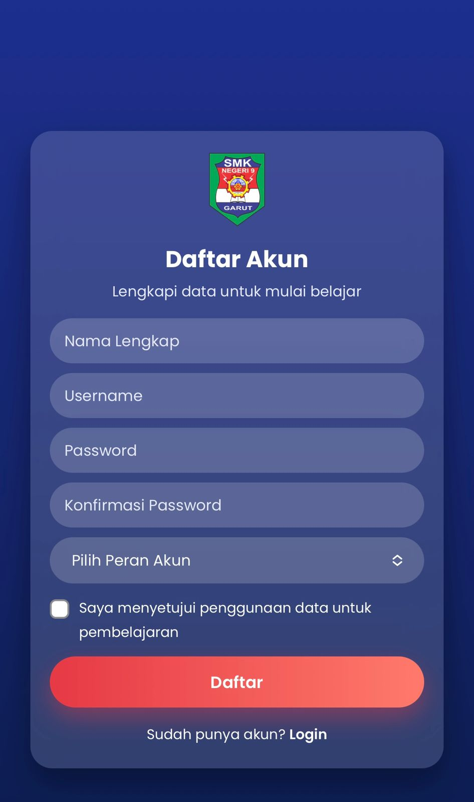
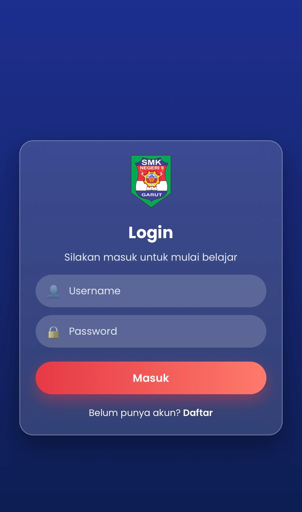
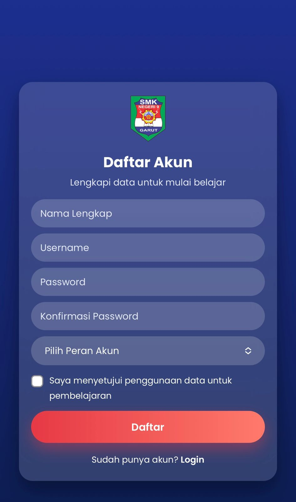
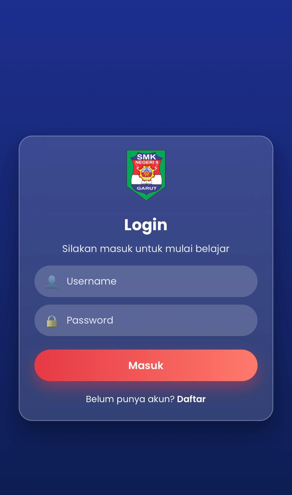

INFORMASI GURU PENGAMPU
Nama Guru : Ikeu Suryani, S.Pd
Mata Pelajaran: Perencanaan dan Pengalamatan Jaringan
Jurusan: Teknik Jaringan Komputer dan Telekomunikasi
Sekolah: SMK Negeri 9 Garut
INFORMASI MATA PELAJARAN
Mata pelajaran Perencanaan dan Pengalamatan Jaringan adalah bagian penting dalam kurikulum Teknik Komputer dan Jaringan (TKJ) yang mengajarkan siswa cara merancang topologi dan arsitektur jaringan, mengumpulkan kebutuhan pengguna, memilih teknologi, serta melakukan pengalamatan IP yang efisien menggunakan metode seperti CIDR dan VLSM, termasuk subnetting untuk membagi jaringan.
Materi ini membekali siswa dengan kemampuan dasar membangun dan mengkonfigurasi jaringan, termasuk memahami konsep dasar IP Address (IPv4 & IPv6) dan implementasinya.
Konsep Utama yang Dipelajari:
- Perencanaan Jaringan: Merancang kebutuhan perangkat, topologi (Star, Bus, Ring, Mesh), dan arsitektur jaringan agar efisien.
- Pengalamatan Jaringan: Memberikan alamat unik (IP Address) untuk setiap perangkat agar bisa berkomunikasi.
- CIDR (Classless Inter-Domain Routing): Metode membagi jaringan lebih fleksibel daripada pengalamatan kelas tradisional.
- VLSM (Variable Length Subnet Mask): Teknik membagi jaringan menjadi subnet berbeda untuk menghemat IP.
- Subnetting: Memecah satu jaringan besar menjadi subnet kecil.
- IPv4 dan IPv6: Memahami perbedaan dan penerapan alamat IP.
PETUNJUK PENGGUNAAN
Daftar Akun dan Login
Pada halaman Utama di pojok kanan atas ada tombol Login. Untuk masuk ke halaman pembelajaran, pengguna diwajibkan untuk membuat akun terlebih dahulu, setelah itu Login menggunakan akun yang telah didaftarkan.
 



Halaman Dashboard
Pilih materu yang akan di pelajari. Contohnya disini, kita ingin belajar materi tentang "PERENCANAAAN TOPOLOGI JARINGAN" kemudian KLIK Menu itu.
Pelajari Materi Per Indikator
Setelah memilih materi yang akan dipelajari. Pada bagian ini, kita harus menjalankan atau membuka tiap indikator secara bertahap hingga Kuis Akhir. Tiap Indikator berisi Materi, Video Dan Kuis. Untuk membuka Indikator lain hingga kuis akhir, maka users harus menyelesaikan kuis-kuis yang ada di tiap indikator secara bertahap.


Kerjakan Hingga Kuis Akhir
Setelah semua kuis indikator terselesaikan maka, lanjutkan dengan mengisi kuis akhir. Setelah mengisi kuis Akhir, user akan di arahkan ke halaman Laporan Nilai Akhir yang di dalamnya berisi Nilai Akhir, Status kelulusan, Unduh Sertifikat dan Rincian Nilai Akhir.


Jl. Raya Bayongbong, Kabupaten Garut
+6285222248881
smkn9garut@gmail.com